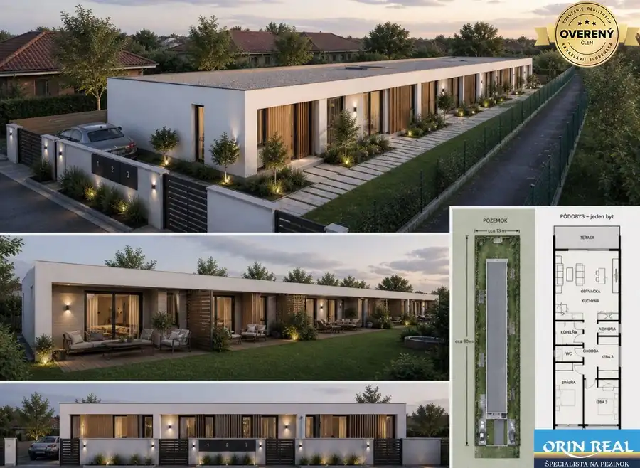
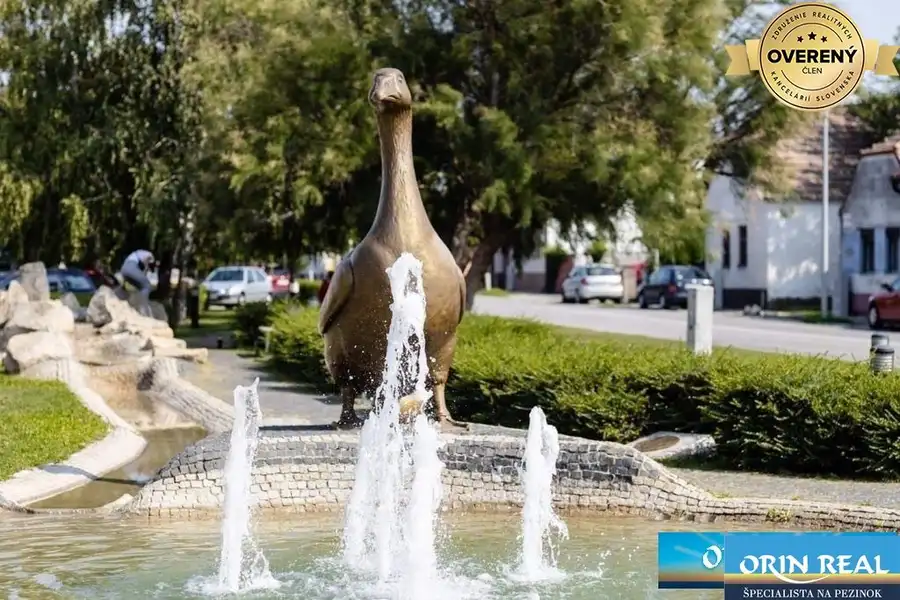
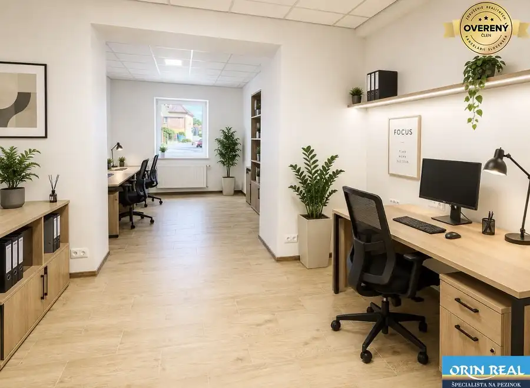

ZĽAVA!!!Na predaj rodinný dom s rozľahlým pozemkom 1788m2 MODRA
Modra
- Dispozícia4-izbový
- Plocha110 m²
- Stavčiastočne prerobený
- Vlastníctvoosobné
O nehnuteľnosti
Licencovaná realitná kancelária Orin real Vám ponúka na predaj jedinečnú investičnú nehnuteľnosť rodinného domu v Modre v príjemnej lokalite Podhorská.
Lokalita je v zastavanom území mesta medzi rodinnými domami blízko tenisových kurtov, futbalového ihriska, letného kúpaliska, kina, potravín, lekárne, autobusovej zástavky a nachádza sa len 5min peši do centra mesta.
Rodinný dom má približne 60 rokov a je celý podpivničený, stavaný bol z tehly okolo roku 1970 je suchý, udržiavaný a stále obývaný. Je čiastočne zrekonštruovaný - zateplený - polystyren, vymenené plastové okná, plávajúce podlahy, strecha je pôvodná, ale nezateká... Je napojený na všetky IS - mestská voda, kanalizácia, kopaná studňa na polievanie - čerpadlo, elektrina, plyn. Kúrenie je riešené plynovým kotlom, ktorý bol aj spolu so 300l zásobníkom na teplú vodu menený cca pred 10 rokmi.
Dom je pripravený na okamžité nasťahovanie!
Dispozične v ňom nájdeme 3 samostatné izby, dve chodby, kuchyňu so špajzou, oddelené wc, priestrannú kúpeľňu v podkrový je daľšia priestranná izba, zatiaľ neobývaná, komplet celý suterén je podpivničený suchý a na podlahe betón a zámková dlažba je rozdelený na 3 miestnosti a 2 vinne obložené pivničné časti. Z pivnice sa dá plynule prechádzať do obytnej časti na zvýšenom prízemí a z nej do podkrovia.
Veľkou výhodou tohto domu je jeho rozľahlý rovinatý pozemok celkovo s rozlohou až 1788m2 delený na zastavanú plochu a nádvorie 516m2 kde je postavený rodinný dom so zastavanou plochou 130m2, vinicu 450m2- zatrávnená časť záhrady a ostatnú plochu 822m2, kde momentálne nájdete ovocné stromy a majitelia tu chovajú zvieratá. Na tejto ploche bude možné stavať ďaľšie RD, máme vyžiadané UPI a ústny súhlas z mesta. Je to príjemná, tichá lokalita s dobrými susedmi.
Vzdialenosť 27km od Bratislavy a bohatá história tohto vinárskeho mesta na úpätí Malých Karpát radí mesto Modra do turisticky vyhľadávanéj lokality, kôli bohatému celoročnému kultúrnemu programu, či už kôli ochutnávkam vína, gastronomickým zážitkom, hrnčiarskej - keramikárskej preslávenej Majolike, či ako zástavka milovníkov prírody po ceste do Harmónie, na lyžiarske stredisko Zochová Chata, Rozhľadňu Veľká Homola. Tieto lokality ponúknu novým majiteľom domu dostatok možností na turistiku, či športové alebo rekreačné aktivity počas celého roka.
Cena tejto nehnuteľnosti je 460.000,-Eur s kompletným právnym servisom. Ak Vás tato ponuka zaujala, neváhajte nás kontaktovať a dohodnite si obhliadku.
Spoločnosť ORIN REAL s.r.o. nezodpovedá za správnosť, úplnosť a presnosť informácií uvedených v tomto inzeráte, ktoré majú iba informatívny charakter.
Parametre
| Rozloha pozemku | 1788 m² |
|---|---|
| Zastavaná plocha | 516 m² |
| Celková rozloha | 1788 m² |
| Úžitková plocha | 110 m² |
| Počet poschodí | 3 |
| Počet izieb | 4 |
| Vlastníctvo | osobné |
| Stav | čiastočne prerobený |
| Odvoz odpadu | áno |
| Voda | verejný vodovod |
| El. napätie | 230/400V |
| Plyn | áno |
| Kanalizácia | áno |
| Internet | lokálny poskytovateľ |
| Kúpeľňa | vaňa |
| Vykurovanie | vlastné - plyn |
| Balkón | áno |
| Pivnica | áno |
| Garáž | nie |
| Parkovanie | vnútorné |
| Inžinierske siete | áno |
| Postavené z | tehla |
| Zariadenie | čiastočne |
| Zateplený objekt | áno |
| Strecha | pôvodná |
| Klimatizácia | nie |
| Energetický certifikát | nie |
| Predzáhradka | áno |
| Bezbariérový prístup | nie |
| Okná | plastové |
| Terén | mierny svah |
| Prístupová cesta | asfaltová cesta |
| Dátum zverejnenia | 14. 9. 2026 |
Kde to je
Mohlo by Vás zaujímať

Pozemok9 249 000 €Pozemok vhodný na veľký RD Chorvátsky Grob 1.044m2 Chorvátsky Grob 1044 m² Licencovaná realitná kancelária Orin real Vám ponúka na predaj skvelý veľký stavebný pozemok v starej časti obce Chorvátsky Grob na konci slepej…
Pozemok4 144 000 €Stavebný pozemok na RD Slovenský Grob - Orechová 631m2 Slovenský Grob 631 m² Licencovaná realitná kancelária Orin real Vám ponúka na predaj stavebný pozemok určný na bývanie a výstavbu rodinných domov v Slovenskom Grobe len…
Nebytové priestory10 1 200 €Na prenájom obchodný priestor v centre Pezinka 100m2 Pezinok 100 m² Licencovaná realitná kancelária Orin real Vám ponúka na prenájom kompletne zrekonštruovaný obchodný priestor v tichej časti centra mesta Pezinok na…